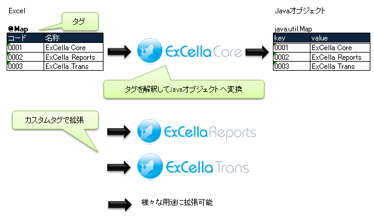

ExCella CoreはJavaでExcelファイルを操作するためのフレームワークです。
ExCella Coreを利用することで、Excel上のデータを簡単にJavaから利用できるようになります
特徴
拡張性に優れさまざま用途に利用可能
カスタムタグを追加する事で、様々な用途での利用が可能です。
ExCella Reports、ExCella Transもカスタムタグの追加によるExCella Coreの拡張版です。
Excelデータを簡単にJavaオブジェクトに変換
Excel上にタグを埋め込む事で簡単にJavaオブジェクトに変換する事ができます。
配列、java.util.List、java.util.Map等様々なデータ型に対応しています
イメージ図
